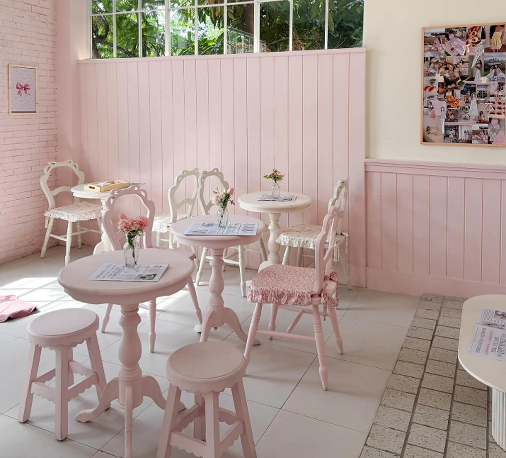

PRE-ORDER DESSERT & BAKERY
Manis yang dibuat
dengan hati.
Salt bread gurih, cookies kenyal, cheesecake lembut, dan minuman segar. Pilih favoritmu, tentukan tanggalnya, lalu ajukan pesanan lewat WhatsApp.

PILIH FAVORITMU
Menu, siap dipesan.
Dari roti garam hingga minuman segar.
Pilih yang kamu suka, atur jumlahnya.
Stok, ongkos kirim, dan pembayaran dikonfirmasi pengelola setelah pengajuan dikirim.
Produk tidak ditemukan.
Coba kata lain atau reset filter.
SEDERHANA DARI AWAL
Pilih, atur, kirim.
Tiga langkah untuk memesan
dessert dan minuman favoritmu.
- 01
Pilih menu
Cari atau filter menu, lalu tambahkan ke keranjang dan atur jumlahnya.
- 02
Atur jadwal & periksa
Pilih ambil atau antar beserta tanggalnya. Periksa ringkasan dan estimasi total.
- 03
Konfirmasi via WhatsApp
Kirim pengajuan. Pengelola mengonfirmasi stok, ongkos kirim, dan pembayaran.
SEBELUM MEMESAN
Ada yang ingin
kamu tanyakan?
Beberapa hal yang perlu diketahui
sebelum memesan.
Apakah menu di katalog pasti tersedia?
Website tidak menampilkan stok real-time. Pengelola perlu mengonfirmasi ketersediaan untuk tanggal yang kamu pilih.
Apakah pengajuan sudah menjadi pesanan?
Belum. Membuka WhatsApp hanya menyiapkan draf pesan. Kirim pesan tersebut dan tunggu konfirmasi pengelola mengenai stok, jadwal, ongkos kirim, dan pembayaran.
Bagaimana harga dan ongkos kirim dihitung?
Total di website adalah estimasi harga produk (harga × jumlah). Ongkos kirim dan biaya tambahan disampaikan pengelola sebelum kamu menyetujui pesanan.
Bagaimana pembayaran dan pembatalan?
Metode pembayaran dan kebijakan pembatalan akan dijelaskan pengelola saat konfirmasi pesanan.
Bagaimana dengan alergen dan masa simpan?
Produk dapat mengandung susu, telur, gluten, kacang, atau bahan lain. Tanyakan informasi alergen dan masa simpan kepada pengelola sebelum memesan.
Apakah data kontak saya disimpan?
Nama, nomor, alamat, dan catatan tidak disimpan oleh website. Keranjang, metode, dan tanggal disimpan di browser ini jika diizinkan. Saat WhatsApp dibuka, data pesanan dimasukkan ke draf pesan pada layanan tersebut.
SAMPAI JUMPA DI IRIS BAKERY
Siap memilih yang manis?
Informasi kontak, lokasi toko, dan jam operasional akan tersedia setelah dikonfirmasi pengelola.